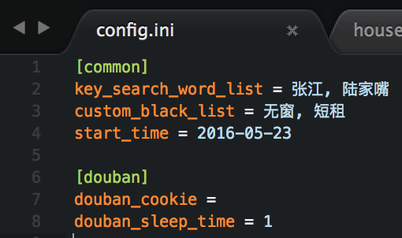
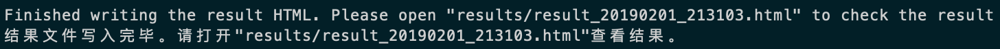
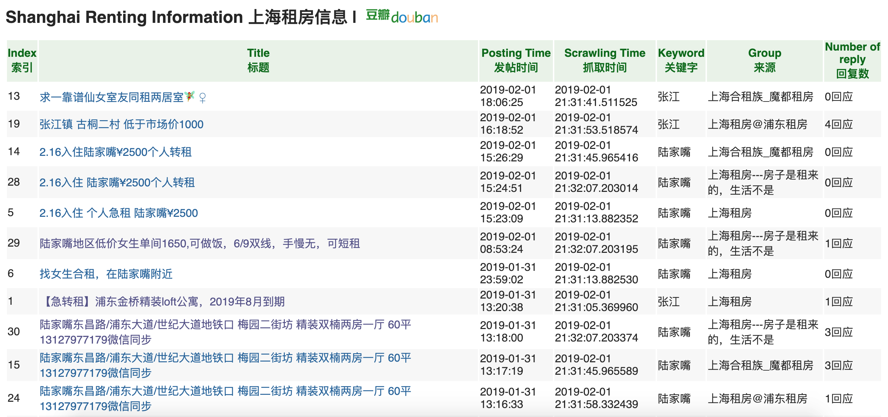
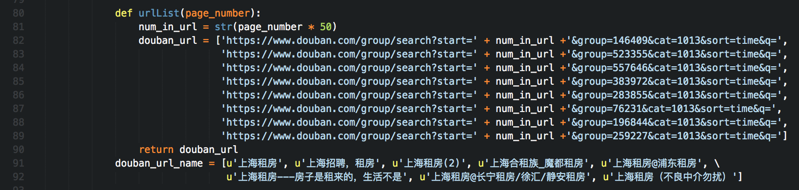

A web spider for crawling accommodation rental information in Douban Group, which is a well-known Chinese online community.
```bash
$ git clone https://github.com/PeggyZWY/house-renting-spider $ cd house-renting-spider
$ pip install -r requirements.txt
$ vim config.ini ```
Configure in config.ini：
1. key_search_word_list is the wanted keywords for the rented accommodation. If there is more than one keyword, use , to delimit them.
2. custom_black_list is the unwanted keyword. Similarly, if there is more than one keyword, use , to delimit them.
3. start_time is the earliest date for the post posted. Set the date in the format like 2018-12-31.
4. Under the option of [douban], douban_cookie and douban_sleep_time don't need to be changed, since the programme will set the cookie automatically. It is recommended to set douban_sleep_time to 1 second, in order not to be defined as a web spider by Douban.com.
For example:

After finishing configuration, type the following in the terminal:
bash
$ python houseRentingSpider.py
Then wait for the spider to work...
When it finishes, information like the following will be shown：
According to the address, open the HTML in any brower and the example results are shown as followes:

In houseRentingSpider.py, there are groups set as following for example.

The group number in the URL list in douban_url should be correspondent to the names in douban_url_name.
In all, after setting the groups here, and setting keywords in config.ini, you can have your own web spider.
豆瓣小组上海租房爬虫
```bash
$ git clone https://github.com/PeggyZWY/house-renting-spider $ cd house-renting-spider
$ pip install -r requirements.txt
$ vim config.ini ```
在config.ini里配置并保存：
1. key_search_word_list为想要搜索的关键词。如果有多个关键词，请用英文逗号,隔开
2. custom_black_list为拒绝的关键词黑名单。同样如果有多个关键词，请用英文逗号,隔开
3. start_time为要搜索在这个时间之后的信息。请用2018-12-31这种格式表示日期
4. [douban]这个option下的douban_cookie和douban_sleep_time不需要改变。程序里会自动设置cookie；douban_sleep_time设为1秒钟比较合适，防止豆瓣反爬虫封号
比如：

配置好之后继续在终端输入：
bash
$ python houseRentingSpider.py
然后就等爬虫爬呀爬。
结束之后，命令行有提示。比如：

根据提示打开此HTML文件后会出现结果。比如（截图仅截取部分结果）：

配色是根据豆瓣来的嘿嘿:)
在houseRentingSpider.py里，现在设置了如下小组。

douban_url这个数组里URL的参数中group的值以及douban_url_name数组里的小组名要一一对应。
也就是说，只要你是在豆瓣小组里对关键字进行爬取，在这里设置小组，在config.ini设置关键词，就可以定制出自己的爬虫。